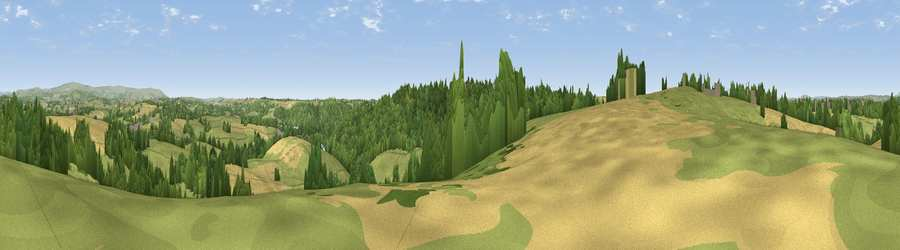

Viewpoint near Elburton Village
#18430 in England · top 36% of its area beats it · near Elburton VillageThe view, rendered

A 360° render of this exact spot computed from the terrain model, tree cover and land cover — summer colours, afternoon light, calibrated against photographs of famous viewpoints. Real trees, hedges and buildings will differ in detail.
The panorama
Grey silhouette: terrain skyline in each direction (720 bearings, Earth curvature and refraction included). Dashed green: skyline with trees (+15 m) and buildings (+8 m) as obstacles. Blue strip: how far the ground is visible on each bearing.
Where the view opens
Wedge length = distance to the farthest visible ground on that bearing (vegetation-aware). Rings at 10, 25 and 50 km.
What fills the view
44% grassland · 31% woodland · 22% cropland · 2% built-up
Angular shares of the visible panorama (visual magnitude), not map area. Landscape diversity 0.51 (0–1 Shannon).
Key numbers
More beautiful places nearby
The staircase of upgrades: each row has a higher view potential than everything closer. Driving times are estimates from straight-line distance, calibrated against real road routing — check an actual route before setting out.
| Place | Direction | Drive | Score |
|---|---|---|---|
| Viewpoint near Wembury | SSW · 1 km | ~3 min | 65.5 |
| Viewpoint near Down Thomas | W · 3 km | ~8 min | 70.8 |
| Viewpoint near Down Thomas | WSW · 3 km | ~8 min | 75.0 |
| Viewpoint near Newton Ferrers | S · 4 km | ~10 min | 78.2 |
| Viewpoint near Newton Ferrers | SE · 6 km | ~13 min | 79.5 |
| Viewpoint near Cawsand | WSW · 11 km | ~20 min | 81.0 |
| Viewpoint near Lee Moor | NNE · 11 km | ~22 min | 82.7 |
| Viewpoint near Downderry | W · 19 km | ~33 min | 83.5 |
50.34434, -4.06767 · source: screening · position refined by local search. Computed location — check access rights before visiting.